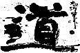
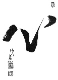

Pensamiento
LOS TRES SENTIDOS DEL KARATE
La escuela Shorinryu Kyudokan de Okinawa Filial Campana a cargo del profesor Cristian Lugani (2do. Dan) tiene la virtud de ser una de las pocas escuelas genuinas y representativas que aún hoy conservan la tradicin de su lugar de origen: La Isla de Okinawa.
UNA ASOCIACION ERRONEA Como consecuencia del desconocimiento de la esencia del Karate y llevados principalmente por la imagen de lucha y combate que es lo que se exhibe en las artes marciales en general, la gente aún cree que el Karate es sinónimo de agresividad y de violencia. Estas ideas errneas se subsanaran si se conociera la esencia misma del Karate y las connotaciones histricas, producto de una larga tradicin, de una cultura, de un arte y de una filosofa.
EL VERDADERO SIGNIFICADO El sentido literal del Karate-Do significa "El camino que conduce al arte de las manos vacas", ya que el karateka no tiene ningn tipo de arma sino que hace de su cuerpo un arma. El "Do" implica el sentido filosfico en busca de un equilibrio armnico entre cuerpo, mente y espíritu. El sentido ético y moral del Karate proviene esencialmente del concepto del "Kara" relacionado con el "Makoto", que implica un vaco de toda mala intencin y un afrontarse a s mismo y a los otros sin mala falsedades. El sentido filosfico del termino "Kara" deriva del vaco que pregona la Filosofa Zen y que alude a un vaco total de la mente para que no exista una interferencia racional entre el ejecutor y la accin, en este caso, los movimientos del Karate.

Kanji DO, Camino o Va.

Kyu Shin Rhu, La Escuela para dirigir el Espíritu.

Fudochi, La Sabidura sin movimiento.

Hara, El ocano de la Energa.

Shin, El Espíritu.

Makoto, Sinceridad.

Dojo Kun (Reglas del Dojo) DOJO O UYAMAI KOHAI O ITSUKUSIMU KO Respetar el Dojo y querer a los alumnos de menor graduacin. KEKA KORON O SAKERU KOTO Evitar toda pelea o discusión. REIGI TADASHI KUSHI SEIJITSU NI SORU KOTO Ser Honesto, Cortes y Leal. TANIN O UYAMAU KOTO Respetar al prjimo. DOJO NI REISETSU O SHAKAINI OYOBUSU KOTO Trasladar las enseanzas del Dojo a la sociedad.